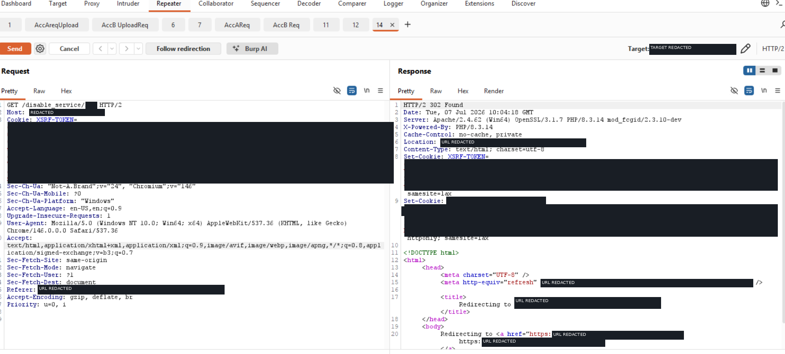

HIGHBOLA / IDOR · BFLA
Cross-account service control
A service-control function accepted an object identifier without enforcing ownership at the server side. Using two controlled test accounts, changing the service identifier caused the function to act on the other account's service.
POC · SANITIZED
GET /disable-service/{other-test-account-service-id}Result: function executed against a resource owned by the second controlled account.